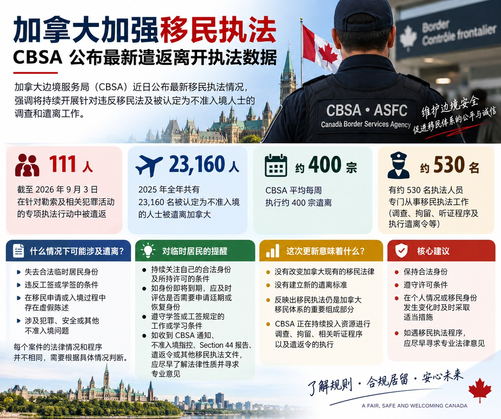

加拿大加强移民执法：CBSA公布最新遣离及执法数据
Read in English
加拿大边境服务局（Canada Border Services Agency，CBSA）近日公布最新移民执法情况。数据显示，加拿大正在持续开展针对违反移民法以及被认定为不准入境（inadmissible）人士的调查和遣离工作。
根据CBSA于2026年9月14日公布的信息，在一项针对勒索（extortion）及相关犯罪活动的专项执法行动中，截至2026年9月3日，已经有111人被遣离加拿大。
需要注意的是，这111人并不是2026年加拿大全部被遣离的人数，而只是上述专项执法行动中的数据。这次公布的信息也不代表加拿大出台了新的移民法或新的遣离标准。
2025年超过23,000人被遣离加拿大
根据CBSA公布的数据，2025年全年共有23,160名被认定为不准入境（inadmissible）的人士被遣离加拿大。
目前，CBSA平均每周执行约400宗遣离，并有约530名执法人员专门从事移民执法工作，包括移民执法调查、移民拘留、参与移民及难民委员会（IRB）的相关听证程序，以及执行Removal Orders。
这些数字说明，加拿大的移民管理不仅涉及签证、学签、工签和永久居民申请，也包括对已经进入加拿大人员的身份合规以及相关移民执法。
什么情况下可能涉及遣离？
一个人可能因为不同原因面临移民执法及遣离程序，例如：
- 失去合法临时居民身份；
- 违反工签或学签的相关条件；
- 在移民申请或入境过程中存在虚假陈述（misrepresentation）；
- 涉及犯罪（criminality）、安全（security）或其他不准入境（inadmissibility）问题。
但是，每个案件的法律情况和程序并不相同。收到Removal Order并不意味着所有人都会立即以相同方式被遣离加拿大。
加拿大移民法下存在不同类型的Removal Orders。根据个人情况，当事人还可能涉及移民及难民委员会（IRB）程序、司法复核（Judicial Review）、遣返前风险评估（Pre-Removal Risk Assessment，PRRA）或其他法律程序。
对加拿大临时居民有什么提醒？
对于目前在加拿大持学签、工签或访客身份的人来说，持续关注自己的合法身份以及所持许可的条件非常重要。
如果身份即将到期，应及时评估是否需要申请延期或恢复身份；同时，也应遵守学签或工签规定的工作或学习条件。
如果已经收到CBSA通知、有关不准入境的指控（inadmissibility allegation）、Section 44 Report、Removal Order或其他移民执法文件，则不宜把它当作普通的签证或身份延期问题处理。
这类案件可能涉及不同的法律程序，而且部分程序具有严格的时限，因此应尽早了解文件的法律性质以及可以采取的应对方式。
这次更新意味着什么？
CBSA此次公布的信息并没有改变加拿大现有的移民法律，也没有建立新的遣离标准。
但最新数据反映出，移民执法（immigration enforcement）仍然是加拿大移民体系的重要组成部分。CBSA正在持续投入执法资源进行调查、拘留、相关听证程序以及Removal Order的执行。
对于已经在加拿大的临时居民而言，保持合法身份、遵守许可条件，并在个人情况或移民身份发生变化时及时采取适当措施，仍然十分重要。
Canada Strengthens Immigration Enforcement: CBSA Releases Latest Removal and Enforcement Data
The Canada Border Services Agency (CBSA) has released new information on its immigration enforcement activities, highlighting its ongoing efforts to investigate immigration violations and enforce removals involving individuals found inadmissible to Canada.
According to information released by the CBSA on September 14, 2026, 111 individuals had been removed from Canada as of September 3, 2026, as part of a targeted enforcement initiative involving extortion and related criminal activities.
These 111 individuals do not represent the total number of people removed from Canada in 2026. The figure relates specifically to the targeted enforcement initiative. The announcement also does not introduce a new immigration law or a new standard for removal.
More Than 23,000 People Removed from Canada in 2025
According to CBSA data, 23,160 individuals who were found inadmissible to Canada were removed in 2025.
The CBSA is currently carrying out approximately 400 removals per week and has approximately 530 officers dedicated to immigration enforcement activities, including immigration investigations, detention, proceedings before the Immigration and Refugee Board of Canada (IRB), and the enforcement of removal orders.
These figures demonstrate that Canada’s immigration system involves not only the processing of visitor visas, study permits, work permits and permanent residence applications, but also ongoing immigration compliance and enforcement after individuals enter Canada.
When Can a Person Face Removal from Canada?
A person may become subject to immigration enforcement and removal proceedings for a variety of reasons. These may include:
- losing legal temporary resident status;
- failing to comply with the conditions of a work or study permit;
- misrepresentation in an immigration application or during the admission process; or
- inadmissibility on grounds such as criminality, security or other grounds established under Canadian immigration law.
However, every case is different. Receiving a Removal Order does not necessarily mean that every individual will be immediately removed from Canada in the same manner.
Depending on the circumstances, an individual may also be involved in proceedings before the Immigration and Refugee Board, an application for judicial review, a Pre-Removal Risk Assessment (PRRA), or other legal processes.
What Should Temporary Residents in Canada Keep in Mind?
For individuals currently in Canada as visitors or holders of study permits or work permits, it is important to continuously maintain legal status and comply with the conditions attached to their immigration documents.
If temporary resident status is approaching expiry, the individual should assess whether an extension or restoration application is required. Work permit and study permit holders should also ensure that they continue to comply with the employment or study conditions attached to their permits.
If an individual receives correspondence from the CBSA, an inadmissibility allegation, a Section 44 Report, a Removal Order, or another immigration enforcement document, the matter should not be treated in the same way as a routine visa or status-extension application.
Immigration enforcement matters may involve different legal procedures and strict deadlines. It is therefore important to understand the nature of the document received and the options that may be available as early as possible.
What Does This Update Mean?
The CBSA announcement does not change Canada’s existing immigration laws or create a new standard for removal.
However, the latest figures demonstrate that immigration enforcement remains an important part of Canada’s immigration system, with the CBSA continuing to dedicate resources to investigations, detention, related proceedings and the enforcement of removal orders.
For temporary residents already in Canada, maintaining valid immigration status, complying with the conditions of their permits, and taking appropriate action when their circumstances or immigration status change remain important.